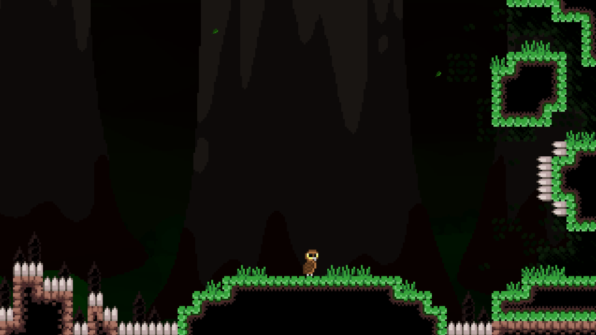
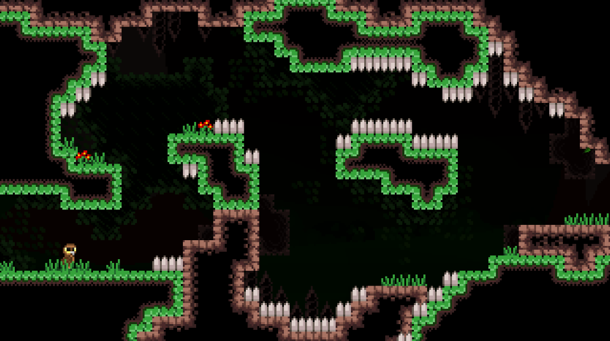
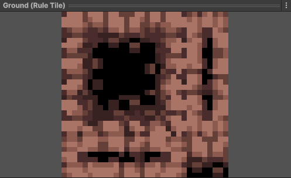
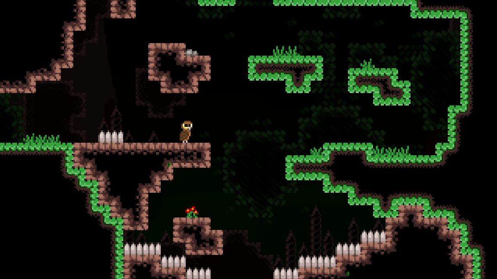
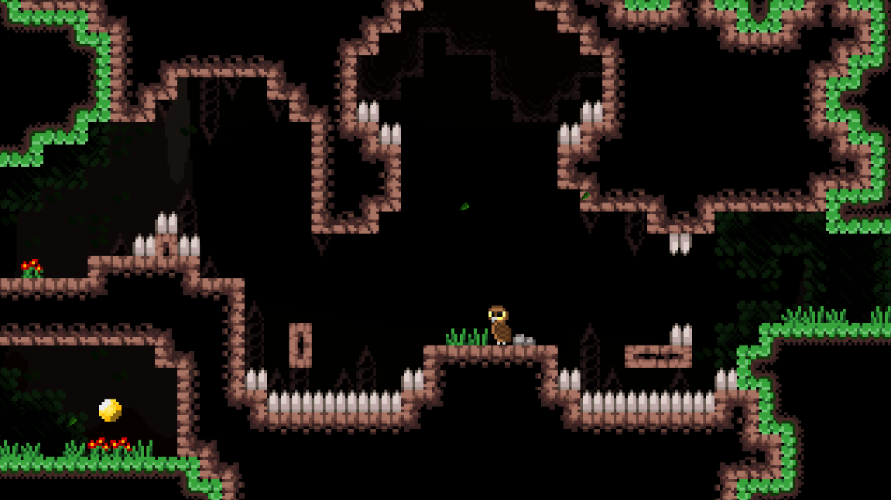
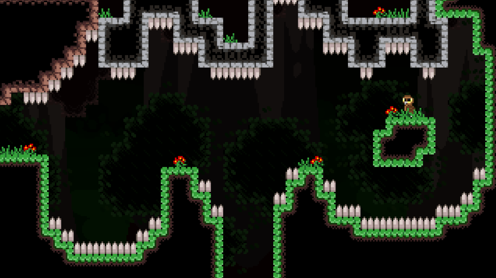
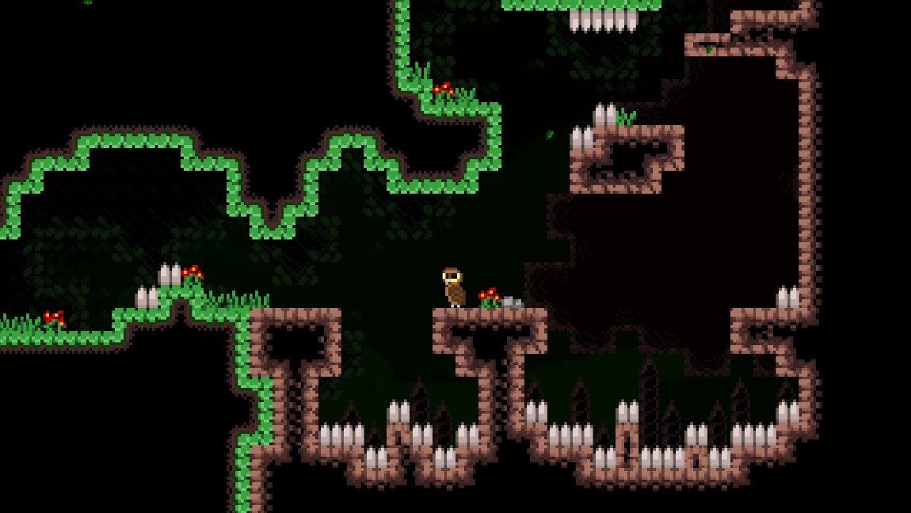

Daniel Sarin
Koodari, 2D artisti

Kuvankaappaus pelin ensimmäisestä huoneesta.
Kuvankaappaus pelin toisesta huoneesta.
Projekti on 2D tasohyppely- ja seikkailupeli, joka on tehty Unity pelimoottorilla.
Peli ottaa inspiraatiota pelistä Celeste.
Pelin päätavoitteena on päihittää peli pääsemällä läpi kaikista tasoista
ja kuolla mahdollisimman vähän. Lisäksi pelaaja pystyy löytämään valinnaisia
keräilyesineitä, jotka ovat piilotettu pelimaailmaan.
Peli on jaettu huoneisiin, jotka pelaajan pitää päästä läpi, ohittaen piikkejä
ja muita vaaroja, hyppimällä tai liitämällä niiden ohi, sekä kiivetä seiniä
pitkin päästäkseen huoneen läpi.
class Player : MonoBehaviour
{
// Simple container for all player states.
public PlayerStateMachine States;
// Data that is passed to the state.
private PlayerStateData state;
private void FixedUpdate()
{
state.frame = input.RequestNextFrame();
state.collision = GetCollisionData();
state.currentState.OnFrameTick(state);
}
...
}
// This is defined in a different file
// but is shown here for readability.
public struct PlayerStateData
{
public InputFrame frame;
public CollisionData collision;
public PlayerState currentState;
}
public class PlayerState : MonoBehaviour
{
private Player player;
private Rigidbody2D rb;
private Animator animator;
private new BoxCollider2D collider;
public Player Player { get => player; }
public Rigidbody2D Rb { get => rb; }
public Animator Animator { get => animator; }
public BoxCollider2D Collider { get => collider; }
public PlayerStateMachine States { get => player.States; }
private void Awake() { ... }
// Return whether this state can be entered.
public virtual bool CanEnter(PlayerStateData data) => true;
// Called when the player enters this state.
public virtual void Enter(PlayerStateData data) { }
// Called when the player exits this state.
public virtual void Exit(PlayerStateData data) { }
// Special function that can be called to reset the state.
public virtual void Reset() { }
// Called on every frame and runs the state logic.
public virtual void OnFrameTick(PlayerStateData data) { }
}
Player on pelaajan pääscripti ja hallinnoi pelaajan toimintoja. Scripti muun muassa lukee framen aikana
saadut syötteet pelaajalta ja hakee pelaajan kollisiot ja antaa ne pelaajan tilalle, joka hoitaa
tarvittavat toiminnot. Pelaajascripti sisältää myös yleisiä funktioita, jotka eivät ole
tilakohtaisia, kuten Move ja Jump funktiot, joita voidaan kutsua useammasta eri tilasta.
PlayerState on kantaluokka, josta muut pelaajatilat periytyvät. Kantaluokka sisältää pelaajan komponentteja sekä
virtuaalifunktioita, joita tilat voivat implementoida. Tila sisältää Enter ja Exit funktiot, joissa
voidaan käynnistää animaatioita tai tehdä muita muutoksia, kun pelaaja siirtyy tilaan tai tilasta pois.
Lisäksi tilassa on OnFrameTick funktio, joka kutsutaan joka frame pelaajan antamilla syötteillä ja sisältää tilan logiikan.
Pelaajalla on tällä hetkellä kuusi mahdollista tilaa, jossa se voi olla:
Tila kun pelaaja on paikoillaan ja maassa.
Tila kun pelaaja liikkuu ja on maassa.
Tila kun pelaaja liitää.
Tila kun pelaaja on ilmassa.
Tila kun pelaaja osuu seinään eikä ole maassa.
Tila, johon pelaaja siirtyy kuollessaan.
public class PlayerInput : MonoBehaviour
{
// Automatically generated class by InputSystem.
private PlayerControls controls;
// Contains player's input data for the current frame.
private InputFrame currentFrame;
private void Start()
{
controls = new PlayerControls();
controls.Enable();
}
private void Update()
{
UpdateFrame();
}
private void UpdateFrame()
{
bool isMoving = controls.Player.Move.IsInProgress();
bool isGliding = controls.Player.Glide.IsInProgress();
bool jumped = controls.Player.Jump.WasPressedThisFrame();
currentFrame.isMoving |= isMoving;
currentFrame.isGliding |= isGliding;
currentFrame.jumped |= jumped;
if (isMoving)
{
currentFrame.movementInput = controls.Player.Move.ReadValue<float>();
}
}
public InputFrame RequestNextFrame()
{
InputFrame frame = currentFrame;
currentFrame = new InputFrame();
UpdateFrame();
return frame;
}
}
public struct InputFrame
{
public bool isMoving;
public bool isGliding;
public bool jumped;
public float movementInput;
}
Suurin osa pelaajan logiikasta tapahtuu FixedUpdate funktiossa, jotta pelin fysiikka toimii. Pelaajan syötteet luetaan joka frame Update funktiossa ja niillä päivitetään pelin tämänhetkistä syöte-framea. Framen voi pyytää käyttämällä RequestNextFrame funktiota, joka palauttaa viimeisimmän framen ja luo uuden.
// GameManager is a persistent singleton object.
public class GameManager : MonoSingleton<GameManager>
{
[SerializeField] private int checkpointId = 0;
[SerializeField] private int roomId = 0;
[SerializeField] ScrollCamera scrollCamera;
private RoomManager roomManager;
private Player player;
private int checkpointRoomId;
public int CheckpointId { get => checkpointId; }
public int RoomId { get => roomId; }
public Room CurrentRoom { get => roomManager.CurrentRoom; }
private void Start() { ... }
private new void Awake()
{
// Time scale is set to zero to avoid player
// falling through the world before level is loaded.
Time.timeScale = 0.0f;
base.Awake();
}
// Called at the start of the game and loads the first room.
public void StartGame()
{
LoadRoom(roomId);
Time.timeScale = 1.0f;
}
public void LoadRoom(int roomId)
{
this.roomId = roomId;
roomManager.LoadRoom(roomId);
scrollCamera.UpdateRoomBounds(CurrentRoom);
}
public void Respawn()
{
if (roomId != checkpointRoomId)
{
LoadRoom(checkpointRoomId);
}
CurrentRoom.Reset();
CurrentRoom.Respawn(checkpointId);
}
...
}
// Directive that is used to switch between modes.
#define KEEP_ROOMS
public class RoomManager : MonoBehaviour
{
[SerializeField] private Room[] roomPrefabs;
private Room currentRoom;
public Room CurrentRoom { get => currentRoom; }
#if KEEP_ROOMS
private Room[] rooms;
private void Start()
{
rooms = new Room[roomPrefabs.Length];
}
#endif
public void LoadRoom(int roomId)
{
// Set room inactive or destroy it.
if (currentRoom != null)
{
#if KEEP_ROOMS
currentRoom.gameObject.SetActive(false);
#else
Destroy(currentRoom.gameObject);
#endif
}
#if KEEP_ROOMS
// Get room if it exists or instantiate it.
currentRoom = rooms[roomId];
if (currentRoom == null)
{
currentRoom = InstantiateRoom(roomId);
rooms[roomId] = currentRoom;
}
currentRoom.gameObject.SetActive(true);
#else
currentRoom = InstantiateRoom(roomId);
#endif
}
// Helper function with bounds check.
private Room InstantiateRoom(int roomId)
{
if (roomPrefabs.Length > roomId)
return Instantiate(roomPrefabs[roomId], transform);
else
throw new System.Exception($"invalid room id ${roomId}");
}
}
GameManager on pysyvä objekti, joka hoitaa pelin scene-vaihtumat ja muut tallennettavat tiedot, kuten
pelaajan checkpointin ja huoneen tunnisteet. Scripti sisältää funktioita uuteen huoneeseen
siirtymiseen ja pelaajan respawnaamiseen.
Tällä hetkellä projektissa ei ole scene-vaihtumia, koska ne refaktoroitiin pois, mutta pelissä tulee
olemaan tulevaisuudessa useampia scenejä, joita pelimanageri tulee hallitsemaan. Pelin tallennus ja
lataus tulevat tapahtumaan scriptin kautta kun ne implementoidaan.
RoomManager hallinnoi pelin huoneita,
eli instantioi uusia huoneita, kun niitä pyydetään, ja tuhoaa huoneita, joita ei enää tarvita. Minä kokeilin
eri implementaatioita huonemanagerille ja sitä pystyy vaihtamaan käyttämällä KEEP_ROOMS directiiviä.
Ensimmäinen implementaatio instantioi huoneen kun pelaaja siirtyy siihen ja tuhoaa edellisen huoneen.
Toinen implementaatio ei tuhoa edellisiä huoneita vaan pitää ne muistissa siltä varalta, että pelaaja
menee takaisin edellisiin huoneisiin.
public class CollectibleManager : MonoSingleton<CollectibleManager>
{
private Dictionary<int, CollectibleData> collectibles = new();
private int count = 0;
// Contains collectible object's persistent data.
private struct CollectibleData
{
public bool collected;
}
// Called in Awake of Collectible instance to register it to the manager.
public void Register(Collectible collectible)
{
bool success = collectibles.TryGetValue(collectible.id, out CollectibleData data);
// Destroy collectible if it has already been collected.
if (success && data.collected)
{
Destroy(collectible.gameObject);
}
// If not in dictionary yet, add a new entry for it.
else if (!success)
{
CollectibleData entry = new CollectibleData
{
collected = false
};
collectibles.Add(collectible.id, entry);
}
}
// Collect a collectible.
public void Collect(Collectible collectible)
{
bool success = collectibles.TryGetValue(collectible.id, out CollectibleData data);
if (!success || data.collected)
{
throw new System.Exception("collectible is not registered or is already collected");
}
count += 1;
data.collected = true;
// Data needs to be removed and re-added for it to be updated.
collectibles.Remove(collectible.id);
collectibles.Add(collectible.id, data);
Destroy(collectible.gameObject);
}
}
CollectibleManager säilyttää tietoa pelin kerättävistä esineistä ja onko pelaaja kerännyt ne.
mitkä keräilyesineet pelaaja on kerännyt ja tuhoaa ne, kun scene on latautunut uudelleen.
Tietoja ei tällä hetkellä säilytetä pelikerran jälkeen, mutta tulevaisuudessa ne tallennetaan
käyttämällä PlayerPrefs luokkaa.
Yksi suurimmista ongelmista, johon törmäsin pelin aikana, oli pelaajan kollisio ja sitä
käyttävät toiminnot ja kyvyt, kuten seinähyppääminen.
Projektin alussa aloitin käyttämällä Tilemap-komponenttia, jolla pystyin luoda pelin tasoja. Ensimmäinen
ideani oli käyttää prefab-objekteja, joissa oli scripti, joka havaitsi, kun pelaaja osui siihen.
Löysin, että tämä lähestymistapa aiheutti ongelmia, koska pelin maaperä on tehty useammasta objektista,
joka seurasi siihen, että funktiota kutsuttiin monta kertaa vaikka pelaaja oli maassa.
Käytin scriptiä myös selvittääkseni pystyykö pelaaja käyttämään joitain kykyjään, kuten hypätä tai liitää.
Koska maaperä oli tehty useammassa prefab-objektista, joilla oli oma kollideri, niiden välillä liikkuminen aiheutti
pienen aikavälin, jonka aikana pelaajaa ei rekisteröity olevan kummankaan objektin päällä, eikä pelaaja pystynyt
silloin hyppäämään. Ongelma aiheutti myös sen, että pelaaja jäi usein jumiin seiniin.
Ongelman pähkäilyn jälkeen löysin, että Tilemap-komponentissa voi käyttää Tilemap Collider ja Composite Collider
komponenttiyhdistelmää luodakseen yhtenäiset kolliderit pelin maalle ja seinille. Tämä tuotti kuitenkin omia reunatapauksiaan,
kuten ongelman, jossa pelaaja ei pystynyt hyppäämään vaikka olisi maassa, jos hän hyppäsi maan reunan ohi oikealla tavalla.
Lopuksi päädyin käyttämään Tilemap Collider ja Composite Collider komponentteja liikkumiseen,
mutta raycastia nähdäkseen missä suunnassa pelaajalla on kollisioita. Suurin osa liikkumiseen liittyvistä
ongelmista ratkaistiin tällä ja pystyin myös lisäämään raycastien etäisyyttä, jotta pelaaja pystyy
hyppäämään vaikka olisikin juuri astunut reunan ohi, joka teki pelistä enemmän anteeksiantavan.
Peli käyttää 320x180 resoluutiota ja 8x8 pikseligrafiikkaa, joka teki
näytöstä 40x22.5 tileä. Resoluutio ei jaa tasan käyttämäni assettien
resoluution kanssa, joka johti siihen, että pelissä näkyi ylimmästä
tilestä vain puolet. En löytänyt hyvää tapaa korjata ongelmaa, koska
resoluution pitää pystyä skaalaantumaan 1920x1080 resoluutioon.
Testasin eri resoluutioita, kuten 640x360, joka tekisi pelin huoneista
kaksi kertaa suurempia, mutta jakautuisi tasan. Päädyin kuitenkin myöhemmin
muuttamaan resoluution takaisin 320x180, koska halusin pitää pelin huoneet pieninä.
Pelissä käytetään Unityn Pixel Perfect kameraa optiolla Render Upscale Texture, joka renderöi
objektit todellisella resoluutiolla, joka on 320x180, ja skaalaa lopputuloksen ruudun resoluutioon.
Lopputuloksena on pikselinen effekti, jota käytän ruohon liikkumiseen.
Ongelmana effektin kanssa on, että kamerassa ei voi valita mihin objekteihin effekti vaikuttaa.
Seurauksena pelaajan liikkumisesta tuli epätasaista, koska pelaajan sprite snappautuu läheisimpään
pikseliin, joka on huomattavaa pelin pienen resoluution takia.
Ratkaisin ongelman käyttämällä renderitekstuuria, johon toinen kamera renderöi pelkästään ruohon
Render Upscale Texture option kanssa, ja toinen kamera, joka renderöi pelaajan ja maailman sekä
renderitekstuurin, jonka avulla sain effektin samalla kuin pelaaja pystyy liikkua pikselien välillä.
Ratkaisu toi myös uuden ongelman, joka vaikutti pelin valaistukseen. En saanut renderitekstuuria
renderöimään pelin valoja, joten minun on pitänyt keksiä uusia ratkaisuja. Yksi ratkaisu, jota
olen testannut, mutta en ole implementoinut vielä on shaderin käyttäminen luomaan samankaltaisen
effektin.
Pelin tasot ovat suunniteltu prefabeina, jotka instantioidaan, kun
pelaaja vaihtaa huonetta. Tämä on tuottanut minulle vaikeuksia visualisoida
kuinka huoneet liittyvät toisiinsa.
Sain väliaikaisesti ratkaistua ongelman laittamalla kaikki huoneet sceneen,
jotta pystyn katsella kaikkia huoneita, mutta käyttämäni kamerasysteemin
takia ne eivät renderöidy oikein scene-näkymässä.
Tulevaisuudessa saatan muuttamaan pelin huonejärjestelmää, jotta pelimaailmaa
pystyy katselemaan, tai aloittaa käyttämään ulkoista level editoria.
Olen testannut kahta level editoria, jotka ovat luotu 2D levelien luomiseen.
Ensimmäinen niistä on Tiled, jossa on paljon ominaisuuksia, mutta oli
monimutkaista käyttää. Testasin myös LDtk level editoria, jota oli helpompi
käyttää, mutta on uudempi. Rakennettuja leveleitä oli hankalaa importata Unityyn
LDtk editorilla, koska minun piti käyttää epävirallista LDtk to Unity -pakkausta
ja tehdä muutoksia importatuihin leveleihin, jotta ne toimivat, kuten halusin.
Projektin alkupuolella aloitin rakentamalla huoneita käyttämällä
yksittäisiä laattoja, joita minun piti vaihtaa manuaalisesti, jos
halusin toisen tyyppisen laatan paikalle, kuten reunalaatan.
Löysin myöhemmin Unityn Rule Tile komponentin, joka vaihtaa
laattatyyppiä automaattisesti sen naapurien perusteella.

Kuva Unityn Rule Tile komponentista.



